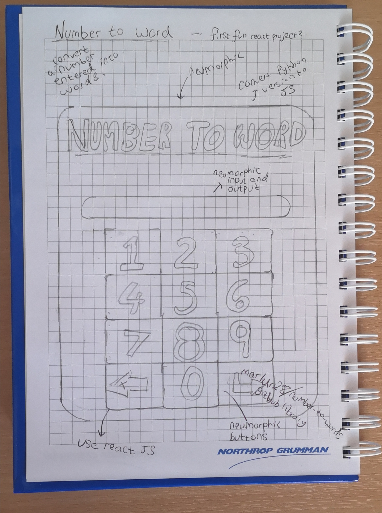
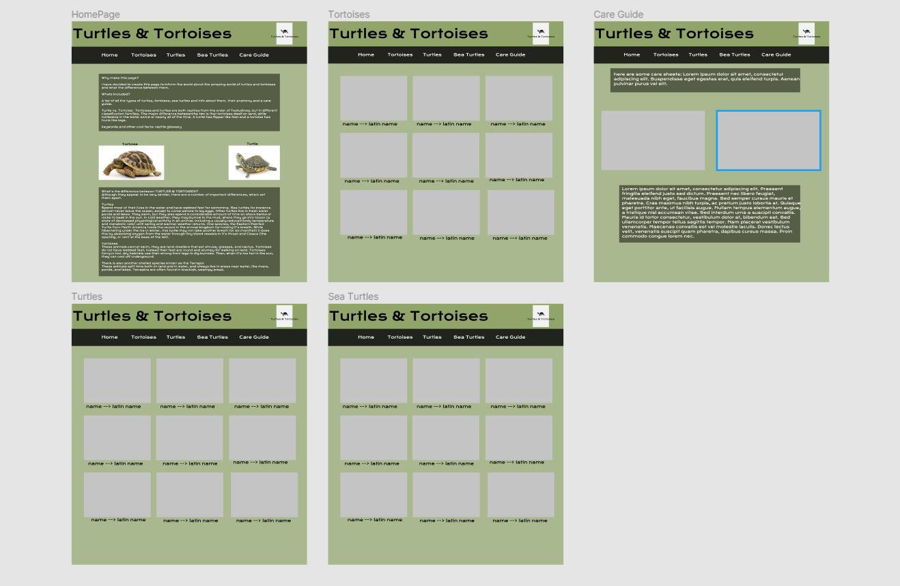
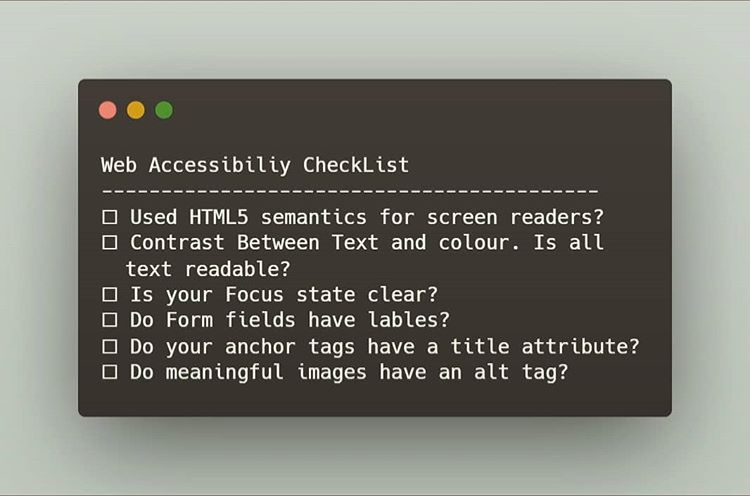

04/04/2020
My Website Process
Although we are in quarantine, you can still learn something new in development. Today I'd like to share with you my website process.
Every Web Developer has their own "flow" when building a website; either for a personal project or a client. The main difference is that for a client site, you probably have a deadline. Here is my process.
The Idea.
For me, this is the tough part. If you're building a client site; the idea is given by the client, however for personal projects with the purpose of practice it can be difficult to think of something that inspires you and something you will finish. Chasing ideas is like the universe, a never-ending story, so I let the ideas come to me. Generally speaking, I carry with me a notebook for drafts. I write out the requirements and features the app needs and draw a frame model to help me in design.
But what if you need a project for a portfolio and you just can't think of anything? In that case, there are many creative people out there who have the ideas just waiting for you to use them. You can see an example here.
The Design
Once I have an idea I begin the design. Admittedly, I find Web Design very difficult (yes harder than code). It takes me absolutely ages. With or without a drawing I start throwing some ideas into Figma. Navigation menu > Landing page > Content . During this process, it is incredibly easy to feel lost. In my case scrolling through Dribbble helps to find inspiration, there are thousands of websites on the web; which can inspire your design. While creating a design it's a good practice to start collecting all the assets you are going to need. This can include images, icons and fonts - typography is an important aspect of any website. Creating an assets folder while you are designing saves lots of time in the long run. Some websites for icons include FontAwesome, IconMonstr for images you can use Pexels and of course there is Google Fonts. Once I have finished the desktop version sometimes I design for mobile, however generally that happens in code as mobile layouts don't need to be complex.
The Code
The code is where the fun comes in. I make a folder for scripts, assets, and a folder for each page each with their own styles folder. From here the HTML is easy to set up I try to use BEM (Block element modifier) however, this doesn't always work out. For a CSS preprocessor, I use SASS this allows me to create a component-like structure making the CSS neat. I can create a navigation component and put the styles there; then import it into "main.scss". As for code, by default, I code desktop first, however as Kevin proposed here it's much easier to start with the minimum and add onto it, rather than subtracting styles. For the last few projects, I have tried to do mobile-first. When I make any website certain styles repeat, these I put on code pen, so I can just grab them from there. Another useful tip for saving time.
Post-Processing
I honestly try to do this while coding, but sometimes you just forget. For some people things like alternative attributes for images are instinctual, but I have to go back over the code and check accessibility. To do this I have created the following checklist:

At this stage, it's a good idea to test responsiveness. Whip up the old
git init, git push protocol and add it too
Github Pages. Then you can test all the devices you can to find what's
broken. If nothing then you have done well, If text is no longer centred
or the font is too big, you can make the necessary changes. This is
where the true sigh of relief comes, all you are doing now is the small
things that broke. Satisfying.
Closing
Now you are truly done. You can add the site to Netlify, gh-pages, etc. At this point, I tend to write up the documentation in the GitHub readme file. Then you can grab another cup of tea and look at all the hard work you put in.